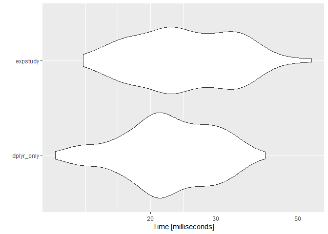

The goal of expstudy is to provide a set of tools to quickly conduct analysis of an experience study. Commonly used techniques (such as actual-to-expected analysis) are generalized and streamlined so that repetitive coding is avoided.
Most analyses for an experience study is structured around measures for a particular decrement of interest, e.g., the number of policy surrenders for a surrender experience study. For any given decrement of interest, the following measures are commonly utilized:
- Actuals: the actual decrement count (or amount) observed
- Exposures: the number of policies or the face amount of insurance exposed to the decrement of interest
- Expecteds: the expected decrement count or amount per unit of exposure
- Variances: the expectation variance of an underlying assumption for the expecteds of the study (used primarily for confidence intervals and credibility scores)
expstudy provides functions to recognize or identify study measures so that the routine analyses can be streamlined.
Installation
expstudy is published to CRAN so you can download directly from any CRAN mirror:
install.packages('expstudy')Development version
To get a bug fix or to use a feature from the development version, you can install the development version of expstudy from GitHub.
# Uncomment below if you do not have pak installed yet.
# install.packages('pak')
pak::pak('cb12991/expstudy')Usage
This package provides a sample mortality experience study to aid with examples:
dplyr::glimpse(mortexp)
#> Rows: 176,096
#> Columns: 23
#> $ AS_OF_DATE <date> 1998-04-30, 1998-05-31, 1998-06-30, 1998-07-31,…
#> $ POLICY_HOLDER <fct> PH_0001, PH_0001, PH_0001, PH_0001, PH_0001, PH_…
#> $ GENDER <fct> FEMALE, FEMALE, FEMALE, FEMALE, FEMALE, FEMALE, …
#> $ SMOKING_STATUS <fct> NON-SMOKER, NON-SMOKER, NON-SMOKER, NON-SMOKER, …
#> $ UNDERWRITING_CLASS <fct> STANDARD, STANDARD, STANDARD, STANDARD, STANDARD…
#> $ FACE_AMOUNT <dbl> 5000, 5000, 5000, 5000, 5000, 5000, 5000, 5000, …
#> $ INSURED_DOB <date> 1977-01-20, 1977-01-20, 1977-01-20, 1977-01-20,…
#> $ ISSUE_DATE <date> 1998-04-02, 1998-04-02, 1998-04-02, 1998-04-02,…
#> $ TERMINATION_DATE <date> 2013-08-08, 2013-08-08, 2013-08-08, 2013-08-08,…
#> $ ISSUE_AGE <dbl> 20, 20, 20, 20, 20, 20, 20, 20, 20, 20, 20, 20, …
#> $ ATTAINED_AGE <dbl> 22, 22, 22, 22, 22, 22, 22, 22, 22, 23, 23, 23, …
#> $ EXPECTED_MORTALITY_RT <dbl> 0.01020408, 0.01020408, 0.01020408, 0.01020408, …
#> $ POLICY_DURATION_YR <dbl> 1, 1, 1, 1, 1, 1, 1, 1, 1, 1, 1, 1, 2, 2, 2, 2, …
#> $ POLICY_DURATION_MNTH <int> 1, 2, 3, 4, 5, 6, 7, 8, 9, 10, 11, 12, 13, 14, 1…
#> $ POLICY_STATUS <fct> SURRENDERED, SURRENDERED, SURRENDERED, SURRENDER…
#> $ MORT_EXPOSURE_CNT <dbl> 0.07671233, 0.08219178, 0.07945205, 0.08219178, …
#> $ MORT_EXPOSURE_AMT <dbl> 383.5616, 410.9589, 397.2603, 410.9589, 410.9589…
#> $ MORT_ACTUAL_CNT <dbl> 0, 0, 0, 0, 0, 0, 0, 0, 0, 0, 0, 0, 0, 0, 0, 0, …
#> $ MORT_ACTUAL_AMT <dbl> 0, 0, 0, 0, 0, 0, 0, 0, 0, 0, 0, 0, 0, 0, 0, 0, …
#> $ MORT_EXPECTED_CNT <dbl> 0.0007827789, 0.0008386916, 0.0008107353, 0.0008…
#> $ MORT_EXPECTED_AMT <dbl> 3.913894, 4.193458, 4.053676, 4.193458, 4.193458…
#> $ MORT_VARIANCE_CNT <dbl> 0.0007821661, 0.0008379882, 0.0008100780, 0.0008…
#> $ MORT_VARIANCE_AMT <dbl> 19554.15, 20949.71, 20251.95, 20949.71, 20949.71…Assumptions within an experience study are often evaluated via actual-to-expected (AE) ratios. The aggregate assumption performance can be reviewed by totaling up the actuals and dividing by the total expecteds to produce the AE ratio. An AE ratio close to 100% signifies the expectation using the underlying assumption reflects actual policyholder behavior observed in experience.
Calculating the aggregate AE ratio without expstudy (with the help of the tidyverse/dplyr package) is shown below:
library(dplyr)
mortexp %>%
summarise(
across(
.cols = c(
MORT_EXPOSURE_CNT, MORT_ACTUAL_CNT, MORT_EXPECTED_CNT,
MORT_VARIANCE_CNT, MORT_EXPOSURE_AMT, MORT_ACTUAL_AMT,
MORT_EXPECTED_AMT, MORT_VARIANCE_AMT
),
.fns = \(x) sum(x, na.rm = TRUE)
)
) %>%
mutate(
CNT_AE_RATIO = MORT_ACTUAL_CNT / MORT_EXPECTED_CNT,
AMT_AE_RATIO = MORT_ACTUAL_AMT / MORT_EXPECTED_AMT
) %>%
glimpse
#> Rows: 1
#> Columns: 10
#> $ MORT_EXPOSURE_CNT <dbl> 14295.43
#> $ MORT_ACTUAL_CNT <dbl> 315
#> $ MORT_EXPECTED_CNT <dbl> 256.4227
#> $ MORT_VARIANCE_CNT <dbl> 255.9583
#> $ MORT_EXPOSURE_AMT <dbl> 210257356
#> $ MORT_ACTUAL_AMT <dbl> 4650000
#> $ MORT_EXPECTED_AMT <dbl> 3843358
#> $ MORT_VARIANCE_AMT <dbl> 148007176380
#> $ CNT_AE_RATIO <dbl> 1.22844
#> $ AMT_AE_RATIO <dbl> 1.20988Using expstudy, the code to produce the same output is as follows:
mortexp %>% summarise_measures %>% mutate_metrics %>% glimpse
#> Rows: 1
#> Columns: 18
#> $ MORT_ACTUAL_CNT <dbl> 315
#> $ MORT_EXPOSURE_CNT <dbl> 14295.43
#> $ MORT_EXPECTED_CNT <dbl> 256.4227
#> $ MORT_VARIANCE_CNT <dbl> 255.9583
#> $ MORT_ACTUAL_AMT <dbl> 4650000
#> $ MORT_EXPOSURE_AMT <dbl> 210257356
#> $ MORT_EXPECTED_AMT <dbl> 3843358
#> $ MORT_VARIANCE_AMT <dbl> 148007176380
#> $ AVG_OBSRV_CNT <dbl> 0.02203501
#> $ AVG_EXPEC_CNT <dbl> 0.01793739
#> $ CI_FCTR_CNT <dbl> 0.002193488
#> $ AE_RATIO_CNT <dbl> 1.22844
#> $ CREDIBILITY_CNT <dbl> 0.4088781
#> $ AVG_OBSRV_AMT <dbl> 0.02211575
#> $ AVG_EXPEC_AMT <dbl> 0.0182793
#> $ CI_FCTR_AMT <dbl> 0.003586231
#> $ AE_RATIO_AMT <dbl> 1.20988
#> $ CREDIBILITY_AMT <dbl> 0.2548539The runtimes of each do not significantly differ, so there is no performance degradation with the code improvement:
library(microbenchmark)
library(ggplot2)
autoplot(microbenchmark(
dplyr_only = mortexp %>%
summarise(
across(
.cols = c(
MORT_EXPOSURE_CNT, MORT_ACTUAL_CNT, MORT_EXPECTED_CNT,
MORT_VARIANCE_CNT, MORT_EXPOSURE_AMT, MORT_ACTUAL_AMT,
MORT_EXPECTED_AMT, MORT_VARIANCE_AMT
),
.fns = \(x) sum(x, na.rm = TRUE)
)
) %>%
mutate(
CNT_AE_RATIO = MORT_ACTUAL_CNT / MORT_EXPECTED_CNT,
AMT_AE_RATIO = MORT_ACTUAL_AMT / MORT_EXPECTED_AMT
),
expstudy = mortexp %>% summarise_measures %>% mutate_metrics
))
Note that expstudy is calculating more than the AE ratio metric. Without those additional metrics, performance with expstudy actually surpasses performance without:
autoplot(microbenchmark(
dplyr_only = mortexp %>%
summarise(
across(
.cols = c(
MORT_EXPOSURE_CNT, MORT_ACTUAL_CNT, MORT_EXPECTED_CNT,
MORT_VARIANCE_CNT, MORT_EXPOSURE_AMT, MORT_ACTUAL_AMT,
MORT_EXPECTED_AMT, MORT_VARIANCE_AMT
),
.fns = \(x) sum(x, na.rm = TRUE)
)
) %>%
mutate(
CNT_AE_RATIO = MORT_ACTUAL_CNT / MORT_EXPECTED_CNT,
AMT_AE_RATIO = MORT_ACTUAL_AMT / MORT_EXPECTED_AMT
),
expstudy = mortexp %>%
summarise_measures %>%
mutate_metrics(
metrics = list(AE_RATIO = ae_ratio)
)
))
Whenever there is not enough credibility for a company to write their own assumption, adjustment factors are often used to incorporate emerging experience. expstudy provides a function to determine factor adjustments for each provided set of measures using a variety of methods.
mortexp %>%
group_by(
GENDER,
SMOKING_STATUS
) %>%
compute_fct_adjs(
expected_rate = EXPECTED_MORTALITY_RT,
amount_scalar = FACE_AMOUNT,
method = 'sequential'
)
#> $CNT
#> SMOKING_STATUS GENDER GENDER_FCT_ADJ SMOKING_STATUS_FCT_ADJ COMPOSITE_FCT_ADJ
#> 1 NON-SMOKER FEMALE 1.271511 1.0194734 1.296272
#> 2 NON-SMOKER MALE 1.193514 1.0194734 1.216755
#> 3 SMOKER FEMALE 1.271511 0.9515988 1.209968
#> 4 SMOKER MALE 1.193514 0.9515988 1.135746
#>
#> $AMT
#> SMOKING_STATUS GENDER GENDER_FCT_ADJ SMOKING_STATUS_FCT_ADJ COMPOSITE_FCT_ADJ
#> 1 NON-SMOKER FEMALE 1.307949 0.998288 1.305710
#> 2 NON-SMOKER MALE 1.129454 0.998288 1.127520
#> 3 SMOKER FEMALE 1.307949 1.004059 1.313259
#> 4 SMOKER MALE 1.129454 1.004059 1.134039Refer to each function’s documentation page for additional detail.
Code of Conduct
Please note that the expstudy project is released with a Contributor Code of Conduct. By contributing to this project, you agree to abide by its terms.